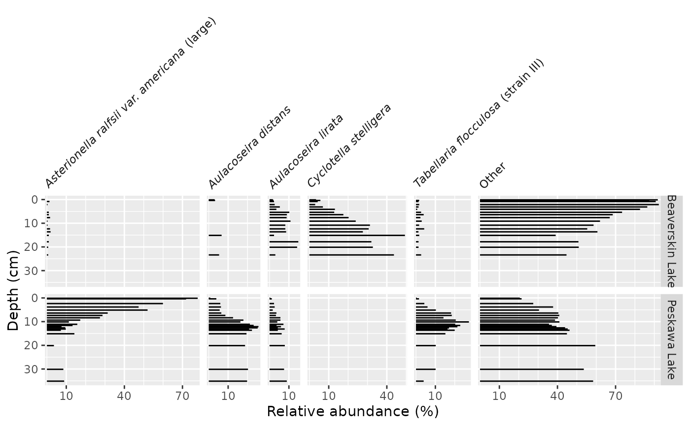
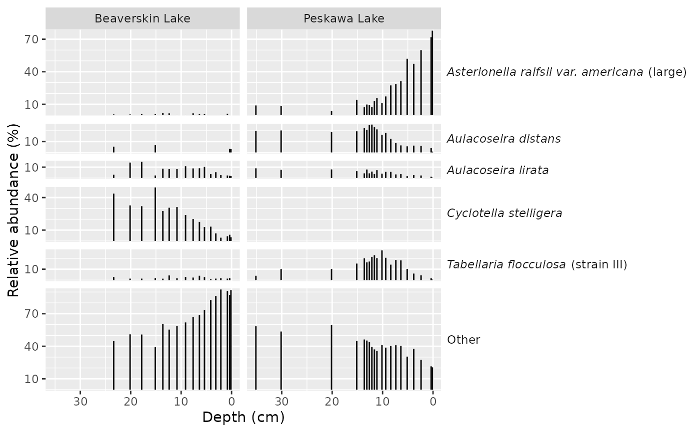
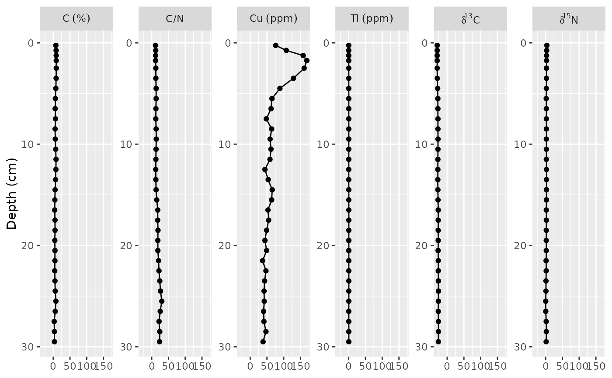
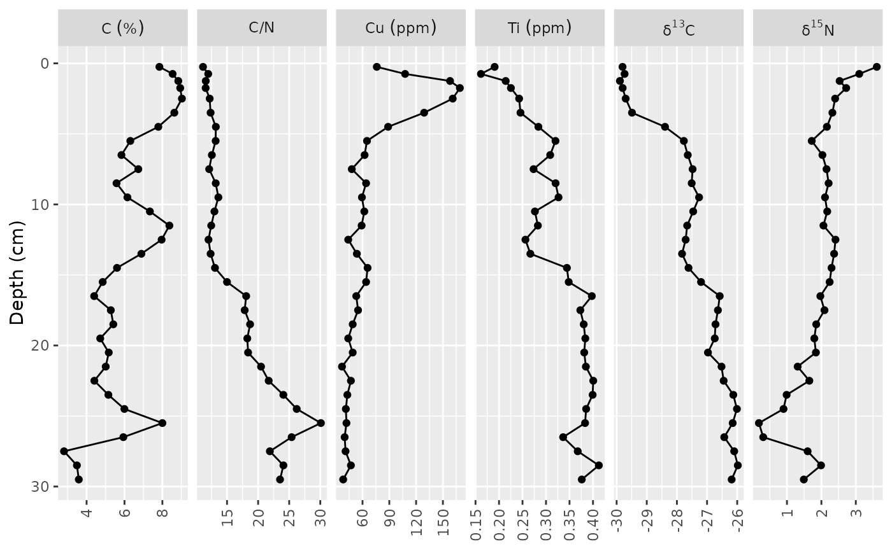
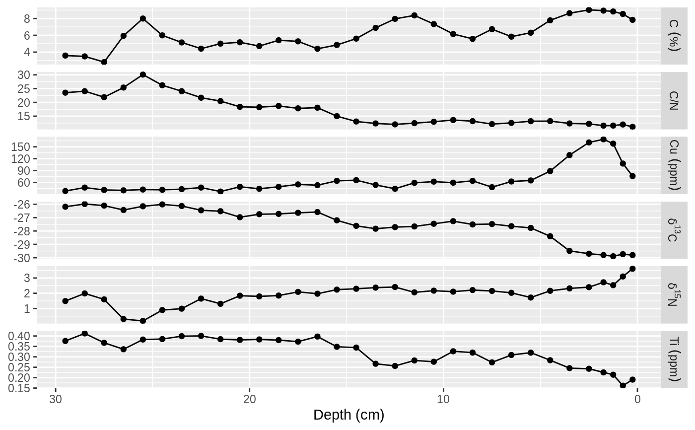

Provides a number of modifications to the plot that are necessary for relative abundance plots of a number of species. See scale_x_abundance, facet_grid, facet_grid, label_species, label_geochem, and rotated_facet_labels rotated_axis_labels for examples of how to customize the default behaviour.
facet_abundanceh( taxon, grouping = NULL, rotate_facet_labels = 45, labeller = label_species, scales = "free_x", space = "free_x", dont_italicize = c("\\(.*?\\)", "spp?\\.", "-complex", "[Oo]ther"), ... ) facet_abundance( taxon, grouping = NULL, rotate_facet_labels = 0, labeller = label_species, scales = "free_y", space = "free_y", dont_italicize = c("\\(.*?\\)", "spp?\\.", "-complex", "[Oo]ther"), ... ) facet_geochem_wraph( param, grouping = NULL, rotate_axis_labels = 90, scales = "free_x", labeller = label_geochem, renamers = c(`^d([0-9]+)([HCNOS])$` = "paste(delta ^ \\1, \\2)", `^210Pb$` = "paste({}^210, Pb)", `^Pb210$` = "paste({}^210, Pb)"), units = character(0), default_units = NA_character_, ... ) facet_geochem_wrap( param, grouping = NULL, scales = "free_y", labeller = label_geochem, renamers = c(`^d([0-9]+)([HCNOS])$` = "paste(delta ^ \\1, \\2)", `^210Pb$` = "paste({}^210, Pb)", `^Pb210$` = "paste({}^210, Pb)"), units = character(0), default_units = NA_character_, ... ) facet_geochem_grid( param, grouping = NULL, rotate_axis_labels = 0, scales = "free_y", space = "fixed", labeller = label_geochem, renamers = c(`^d([0-9]+)([HCNOS])$` = "paste(delta ^ \\1, \\2)", `^210Pb$` = "paste({}^210, Pb)", `^Pb210$` = "paste({}^210, Pb)"), units = character(0), default_units = NA_character_, ... ) facet_geochem_gridh( param, grouping = NULL, rotate_axis_labels = 90, scales = "free_x", space = "fixed", labeller = label_geochem, renamers = c(`^d([0-9]+)([HCNOS])$` = "paste(delta ^ \\1, \\2)", `^210Pb$` = "paste({}^210, Pb)", `^Pb210$` = "paste({}^210, Pb)"), units = character(0), default_units = NA_character_, ... )
| taxon, param | A call to vars, defining the column that identifies the taxon (parameter). |
|---|---|
| grouping | A call to vars, identifying additional grouping columns |
| rotate_facet_labels, rotate_axis_labels | Facet (axis) label rotation (degrees) |
| labeller | Labeller to process facet names. Use label_species to italicize species names, label_geochem to perform common formatting and units, or label_value to suppress. |
| space, scales | Modify default scale freedom behaviour |
| dont_italicize | Regular expressions that should not be italicized |
| ... | Passed to facet_grid (abundance) or facet_wrap (geochem). |
| renamers | Search and replace operations to perform in the form search = replace. Replace text can (should) contain backreferences, and will be parsed as an expression (see plotmath). Use NULL to suppress renaming. |
| units | A named list of values = unit |
| default_units | The default units to apply |
library(ggplot2) ggplot(keji_lakes_plottable, aes(x = rel_abund, y = depth)) + geom_col_segsh() + scale_y_reverse() + facet_abundanceh(vars(taxon), grouping = vars(location)) + labs(y = "Depth (cm)")ggplot(keji_lakes_plottable, aes(y = rel_abund, x = depth)) + geom_col_segs() + scale_x_reverse() + facet_abundance(vars(taxon), grouping = vars(location)) + labs(x = "Depth (cm)")ggplot(alta_lake_geochem, aes(x = value, y = depth)) + geom_lineh() + geom_point() + scale_y_reverse() + facet_geochem_wrap(vars(param), units = c(C = "%", Cu = "ppm", Ti = "ppm"), nrow = 1) + labs(x = NULL, y = "Depth (cm)")ggplot(alta_lake_geochem, aes(x = value, y = depth)) + geom_lineh() + geom_point() + scale_y_reverse() + facet_geochem_gridh(vars(param), units = c(C = "%", Cu = "ppm", Ti = "ppm")) + labs(x = NULL, y = "Depth (cm)")ggplot(alta_lake_geochem, aes(y = value, x = depth)) + geom_line() + geom_point() + scale_x_reverse() + facet_geochem_grid(vars(param), units = c(C = "%", Cu = "ppm", Ti = "ppm")) + labs(y = NULL, x = "Depth (cm)")